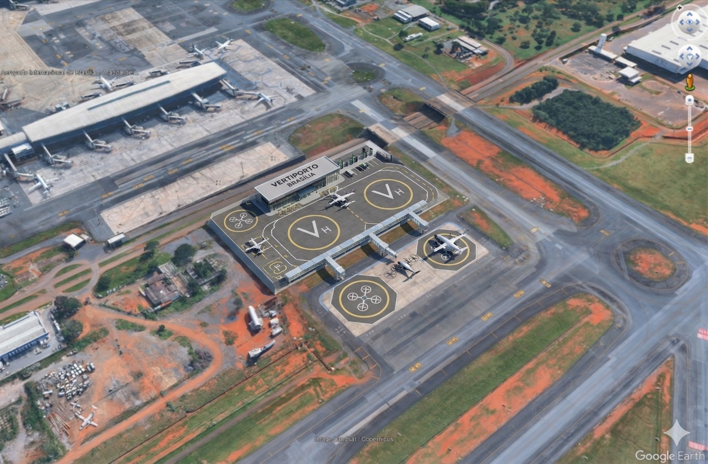
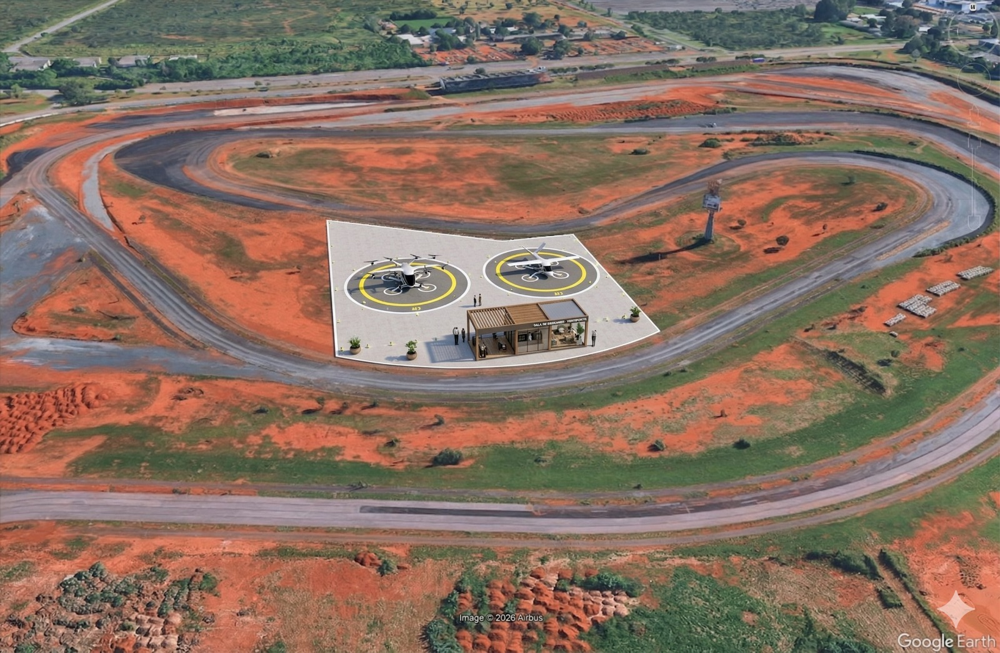
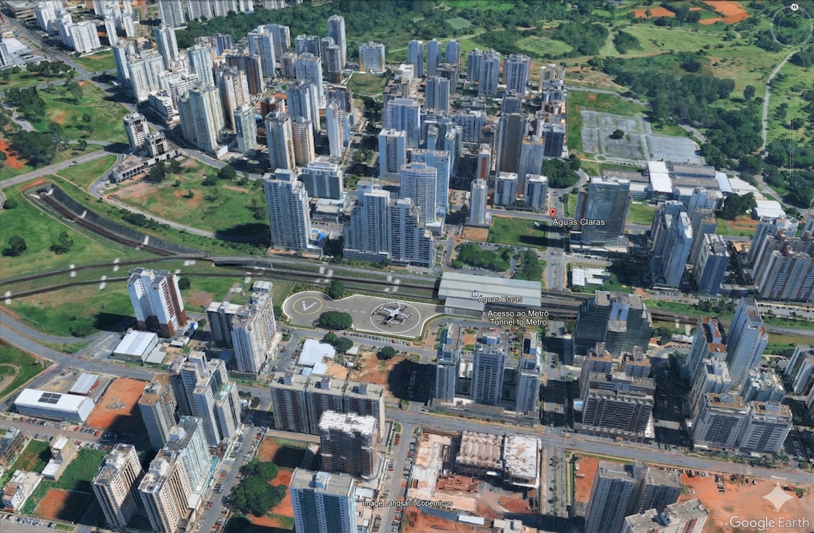

Sítios (polígonos KML)
-
Sítios selecionados pelos polígonos KML do Google Earth e avaliação de buffers acústicos (400 m e 600 m) sobre pontos críticos.
Os sítios selecionados são os polígonos do KML. Os pontos críticos foram considerados com base no artigo de impacto acústico em UAM, aplicando buffers de 400 m e 600 m.
| Sítio | Origem | Critério aplicado |
|---|---|---|
| Polígono KML 1 | Google Earth (projeto do grupo) | Verificação de proximidade com pontos críticos via buffers 400 m / 600 m |
| Polígono KML 2 | Google Earth (projeto do grupo) | Verificação de proximidade com pontos críticos via buffers 400 m / 600 m |
| Polígono KML 3 | Google Earth (projeto do grupo) | Verificação de proximidade com pontos críticos via buffers 400 m / 600 m |



Dica: exporte imagens em 16:9 para manter o layout uniforme.